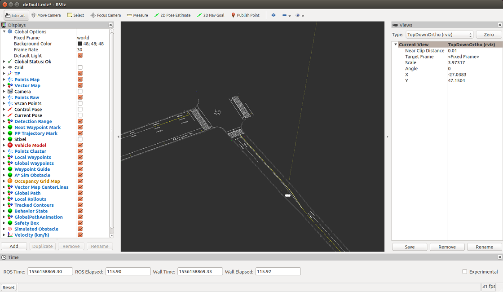
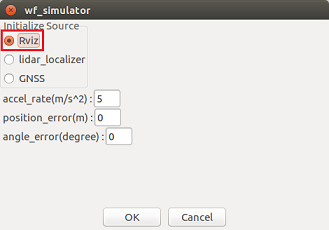

Usage example of twist_filter_sl.slx
Contents
- 1. Run Autoware
- 2. Load vehicle model
- 3. Load vector map and TF
- 4. Launch rviz
- 5. Settings on the Runtime Manager's Computing tab
- 6. Connect MATLAB to Autoware (ROS Master)
- 7. Open twist_filter created in Simulink.
- 8. Run twist_filter created in Simulink
- 9. Set the initial position of the vehicle with rviz
- 10. Start path following
- 11. Clean up
1. Run Autoware
Run Autoware to launch the ROS master.

The Runtime Manager window is launched.

2. Load vehicle model
Open the Setup tab of the Runtime Manager. Load a vehicle model.

3. Load vector map and TF
Open the Map tab of the Runtime Manager. Load Vector Map and TF.

4. Launch rviz
Launch the rviz by clicking the RViz button on the Runtime Manager.

When rviz starts, select [File]-[Open Config] from the menu.

Select " ~/ Autoware / ros / src / .config / rviz / default.rviz" on the file dialog.

After Config setting, Vector Map is displayed on the rviz screen.

5. Settings on the Runtime Manager's Computing tab
(1) Click "app" of waypoint_loader and select the csv file where the route is stored.

After selecting the csv file, check the waypoint_loader checkbox.
(2) Click "app" of vel_pose_connect and check "Simulation Mode".
After setting the "Simulation Mode", check the vel_pose_connect checkbox.
(3) Click "app" of wf_simulator and set "Initialize Source" to "Rviz".

After setting the "Initialize Source", check the wf_simulator checkbox.
(4) Check the checkboxes for lane_rule, lane_stop, lane_select, obstacle_avoid, velocity_set, pure_pursuit and wf_simulator. After setting, the Computing tab is as shown below.
6. Connect MATLAB to Autoware (ROS Master)
Connect to the ROS master using the rosinit command in MATLAB. Set the rosinit arguments according to your environment.
rosinit();
7. Open twist_filter created in Simulink.
Add the folder containing the twist_filter_sl.slx file to MATLAB search path, open the twist_filter Simulink model.
twist_filter_folder = fullfile(autoware.getRootDirectory(), ... 'benchmark', 'computing', 'planning', 'motion', 'waypoint_follower', 'twist_filter'); addpath(twist_filter_folder); model = 'twist_filter_sl'; open_system(model);
8. Run twist_filter created in Simulink
Run the Simulink model.
set_param(model, 'SimulationCommand', 'Start');
9. Set the initial position of the vehicle with rviz
(1) Click "2D Pose Estimate" of rviz. (2) Next, drag the mouse in the direction of movement from the initial position of the vehicle.

10. Start path following
After a while after setting the initial position with rviz, path following starts.

Click here to check the node graph when this example is executed. The node generated by twist_filter_sl is / twist_filter_sl_81473.
{kind=link}
11. Clean up
Execute the following command to finish.
set_param(model, 'SimulationCommand', 'Stop'); close_system(model); rosshutdown(); rmpath(twist_filter_folder); clear('model', 'twist_filter_folder');